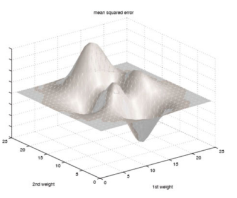
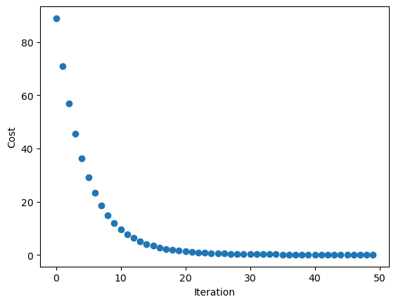

Remember that the classification behavior in a neural network is based on their neurons' weights, and because of that, we have to find the optimal
set of weights to allow our network to have a good classification behavior (Miroslav, 2021).
To explain how and when the backpropagation step is performed, we need to understand how the training process works first.
The training process
Before we train the network, we initialize their neurons' weights with random data, tipically with numbers in the range of [-0.1, 0.1] (Miroslav, 2021).
Additionally, we must keep in mind that we need to set a number of epochs (the number of times we will pass the whole training dataset into out network) to train our
neural network.
The training process can be described following the steps listed below.
Feedforward: The training instances are passed one by one to the network, which will give us a predicted class in the output layer.
Loss (error) calculation: The predicted output is compared to the actual class label. The error is the difference between these two values. The error
help us to measure how well the network is performing on the presented input instance. This is what we call the Mean Squared Error (MSE).
Backpropagation: After the epoch finishes, we have to propagate the loss value from the output layer to the input layer to update the set
of weight values. Here is where we calculate the gradient value, that is the derivative of the loss with respect to the output of each neuron in the network (Miroslav, 2021).
Weight update: After we calculated the gradient of the loss with respect to the output of each neuron, we update the weights of the neurons
using an optimization algorithm such as the gradient descent. The goal of the gradient descent is to minimize the loss value by updating the weights. The weight
update rate is controlled by a hyperparameter called learning rate, which is the size of the step size of the update.
Repetition: Steps 1 to 4 are repeated fo each epoch until convergence is reached in the loss value (it does not improve anymore in future iterations).
Gradient descent
The following figure taken from Miroslav's (2021) work helps us understand the purpose of the gradient descent.

MSE vs weight values
The verical values are the MSE and the horizontal axes are the weights (Miroslav, 2021). The goal of the gradient descent algorithm is to find the local
minimum that represents the minimum loss value. When this value is found, we see at the weight values that are related to that value in the function and
propagate them in the neurons. In other words, we have found the best weight values where the MSE value is very low so we want to tell the network to use those
new weights by doing the back propagation process to update the set of weights in the network.
Gradient descent in Python
This is a modified version of the code
provided in Unit 8 (University of Essex Online, 2022). We modified it to plot the loss value on each iteration and using different learning rates, to show how large learning rate values can lead to
miss the global minimum of the function
import numpy as np
import matplotlib.pyplot as plt
import pandas as pd
for i in range(iterations):
d = {}
y_predicted = m_curr * x + b_curr
cost = (1/n) * sum([val**2 for val in (y-y_predicted)])
md = -(2/n)*sum(x*(y-y_predicted))
bd = -(2/n)*sum(y-y_predicted)
d['iteration'] = i
d['cost'] = cost
values.append(d)
return values
x = np.array([1,2,3,4,5])
y = np.array([5,7,9,11,13])
data = gradient_descent(x, y)
df = pd.DataFrame(data)
plt.scatter(df.iteration, df.cost)
plt.xlabel('Iteration')
plt.ylabel('Cost') Gradient descent in Python. Code taken from this jupyter notebook in Unit 8 (University of Essex Online, 2022).
Using 50 iterations and a learning rate of 0.08 properly reduces the cost function as we can see in the following figure.

Gradient descent with learning rate = 0.08 (University of Essex Online, 2022).
If we update the learning rate, with a larger value (let's use 0.1), we can see how the gradient descent function fails to find the minimum cost value.
Gradient descent with learning rate = 0.1 (University of Essex Online, 2022).